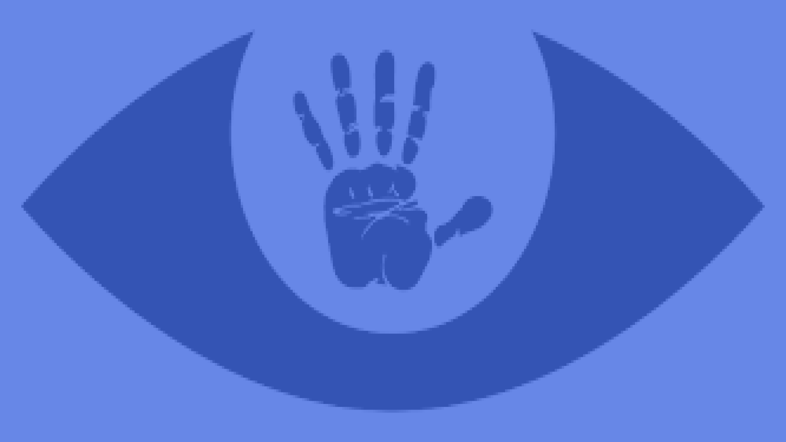

ABOUT
Jan Jambon had een tijd geleden het voorstel gedaan om een vingerafdruk op de identiteitskaart te laten zetten om zo criminaliteit beter te kunnen bestrijden. Hij ziet hier niet het probleem van in, wij zouden graag een beetje meer informatie geven over de risico's/gevolgen die dit voorstel met zich mee kunnen brengen moest het realiteit worden.